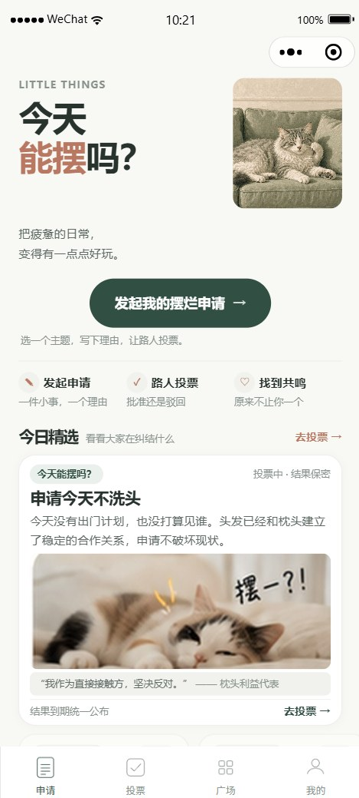
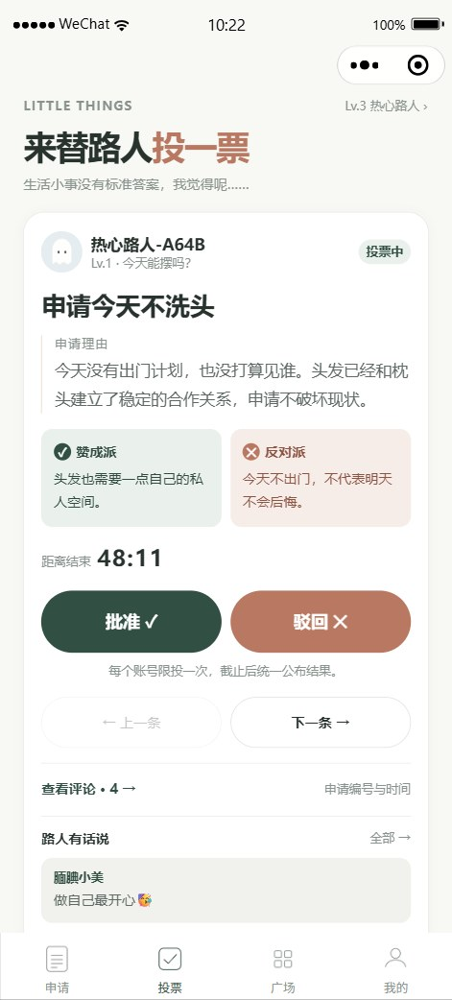
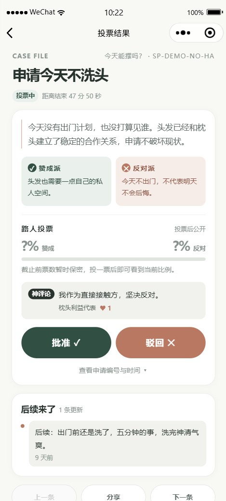
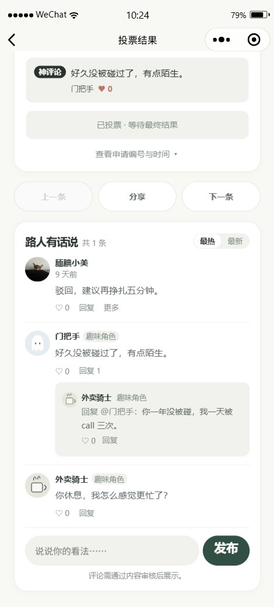
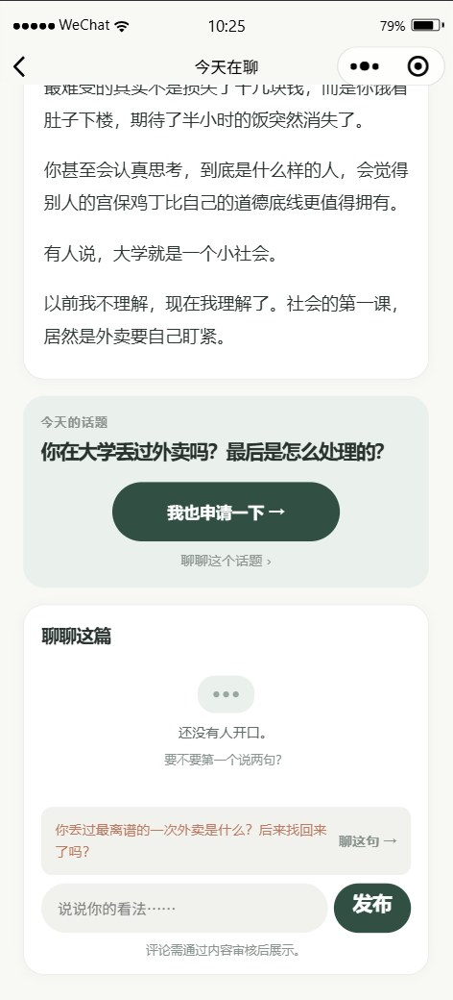
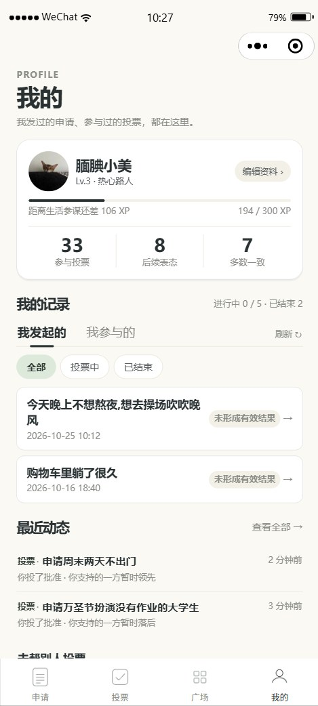
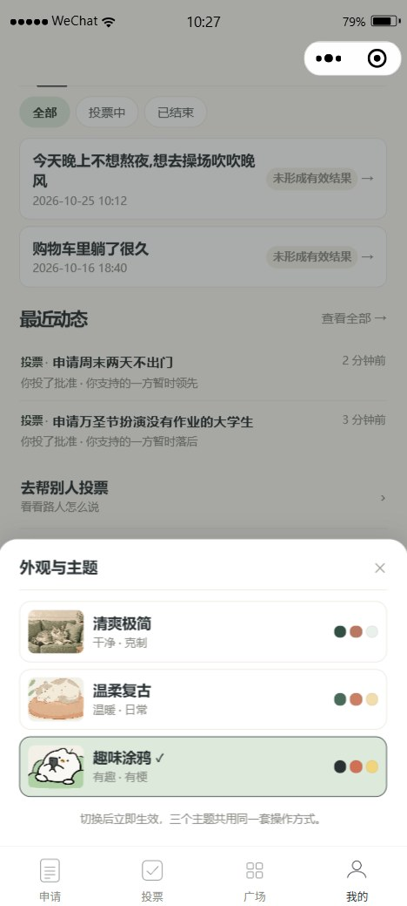

01
摆一下
从六个预设主题（今天能摆吗 / 这钱能花吗 / 今晚能不去吗……）或自定义内容发起申请，写下理由，选 15 / 30 / 60 分钟的投票时限。
同一时间最多 5 份进行中 · 自定义内容先过内容安全审核
LITTLE THINGS · BIG QUESTIONS
给疲惫的日常一点幽默。
一款微信小程序：把「今晚想不想摆烂」这类日常小纠结，写成一份份限时开放的趣味申请，让路过的陌生人投票、评论、围观——批准也好驳回也罢，认真的人都很有趣。

这张截图想说明什么
如实说明：截图为当前版本（业务 V2.2.1 + 视觉 V3.0）的真实运行画面，画面中的账号与内容均为产品内置演示数据，不含真实用户信息。






从六个预设主题（今天能摆吗 / 这钱能花吗 / 今晚能不去吗……）或自定义内容发起申请，写下理由，选 15 / 30 / 60 分钟的投票时限。
同一时间最多 5 份进行中 · 自定义内容先过内容安全审核
抽卡式给陌生人的申请投出「批准 / 驳回」，可以附一句理由；也能在广场按「投票中 / 已结束」围观别人的小纠结与故事后续。
截止后 7 天内还能「后续表态」，但不改已锁定的结果
编辑部的轻量内容频道：今天在聊 / 人间观察 / 离谱研究所。读一段别人的生活观察，聊聊话题，或者顺手发起同款申请。
评论先审后展示 · 与申请评论共用同一套互动机制
选主题、讲理由、定时限。自定义标题要先通过微信内容安全检测才会公开。
投票中的申请不显示赞成比例，避免带节奏；每人只能投一次，单份申请满 21 票封盘。
到期自动出结果：有效票 ≥3 且非平票才分出批准 / 驳回，否则一律「未形成有效结果」——绝不假装 50% 也是个结论。
截止后 7 天互动期：路人可以「后续表态」，申请人可以补「后续来了」故事线；神评论与默契度让围观也有参与感。
结果不具任何约束力——这是社交互动，不是审批系统。
管理中心位于小程序内。授权管理员进入后，可查看待办概览，按状态筛选请求，并查看处理后的记录。


以上为提供的真实运行截图，管理密钥以密码圆点遮蔽。当前展示覆盖授权入口与请求处理前后状态；评论复核列表、处理详情与审计记录未在这组截图中展示。点击截图可查看完整大图。
原生 WXML / WXSS / JS，8 页面 4 标签，无第三方框架；三套主题走 CSS 变量设计系统。
标准库 net/http，唯一依赖 MySQL 驱动；约 40 个 JSON 接口，7300 行实现 + 4000 行测试。
10 张业务表；投票以复合主键防重，写事务 + 行锁保证并发一致，keyset 游标分页。
Docker 多阶段构建、非 root 运行；小程序经 callContainer 内网调用，无公网域名。

完整细节见仓库文档：docs/backend.md · docs/architecture.md
忙碌一天之后还想再干点活，休息时又觉得「是不是该更有意义一点」——这类小疲惫不需要解决方案，只需要有人回应一句「我懂」。
「今天能摆吗？」就是把这个瞬间做成了一个产品：如果连「今天想摆一下」都可以拿出来让大家投票，普通的一天会不会有趣一点？
它由一位大学生独立完成：从产品定位、视觉设计，到 Go 后端、微信云托管部署与自动化测试。项目不追求改变谁的生活方式，只想让普通而疲惫的日常，多一个可以笑一笑的地方。
「我们不是在决定谁有资格休息，而是想让那些想休息的瞬间，也能成为一个值得分享的故事。」